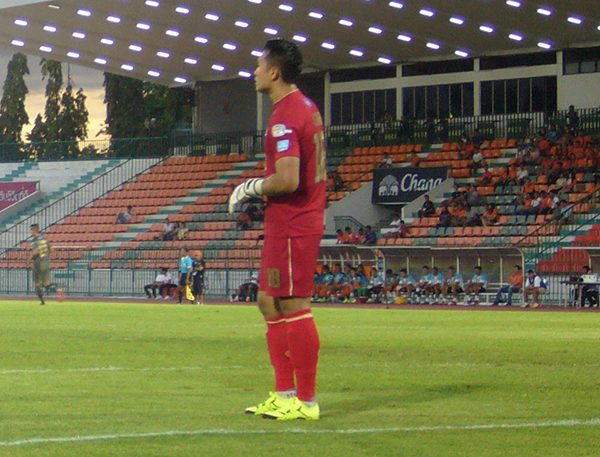

David Beckham Surprises 39 Youth Players at Singapore Football Clinic
The former England captain launched Community Chest's Sports for Good initiative alongside local internationals Hassan Sunny and Izairida Shakira.

Former England captain David Beckham made an unannounced appearance at Bedok South Secondary School on Wednesday morning, November 25, 2026, joining 39 young Singaporean footballers for training drills and an eight-a-side match. The 51-year-old former Manchester United and Real Madrid midfielder attended the session to launch Sports for Good: Football Edition, a youth empowerment program created by Community Chest, the philanthropic arm of Singapore’s National Council of Social Service.
The participants, drawn from Bedok South Secondary School and the network of non-profit Tasek Academy and Social Services, arrived expecting a standard training clinic. Beckham, who has served as a global ambassador for Marina Bay Sands since 2013, joined them through the resort's Sands Cares community engagement programme. He was accompanied on the pitch by veteran Singapore men's goalkeeper Hassan Sunny, women's national goalkeeper Izairida Shakira, and players from Sands United, the integrated resort's staff team.
Grassroots Focus and the Girls2WE Initiative

Organizers designed the multi-year program to combine football coaching with adult mentorship for young people from disadvantaged backgrounds. Tasek Academy chairperson Jane Ittogi attended the launch, which spotlighted the organization’s Girls2WE initiative. The project promotes football participation among girls to build resilience, social connection, and personal confidence.
According to Community Chest managing director Jack Lim, more than half of the children supported through the charity’s existing youth initiatives have recorded measurable gains in leadership and teamwork skills. Community Chest currently funds over 300 social service programs reaching roughly 130,000 individuals across Singapore annually.
Drills, Signed Match Balls, and Local Mentors
During the morning session, Beckham participated directly in passing routines, gave tactical pointers, and distributed autographed footballs to the young players. A 14-year-old participant told The Straits Times that players knew a footballer would attend, but had no advance knowledge that Beckham would step onto the turf.
Senior Parliamentary Secretary for Finance and Manpower Shawn Huang, who co-founded Tasek Academy and serves as MP for West Coast–Jurong West GRC, welcomed the visit. "What an honour to start the morning with Sir David Beckham!" Huang wrote in an Instagram post, praising Beckham's willingness to work alongside grassroots boys' and girls' teams.
Beckham's visit aligns with a recurring series of community clinics held across Southeast Asia during his ambassadorship with Las Vegas Sands Corp. For Singapore's grassroots sector, the initiative integrates local sporting figures like Hassan Sunny alongside international stars to support youth mental wellbeing and broaden athletic participation in neighborhood schools.